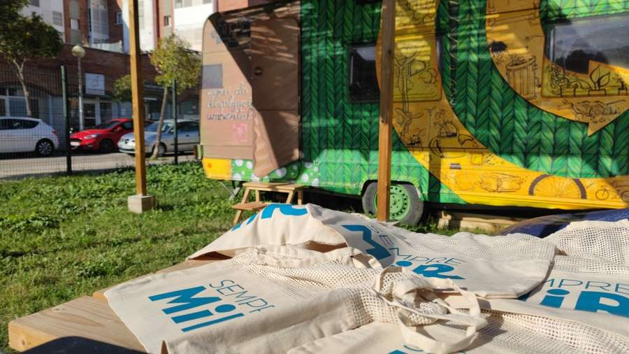
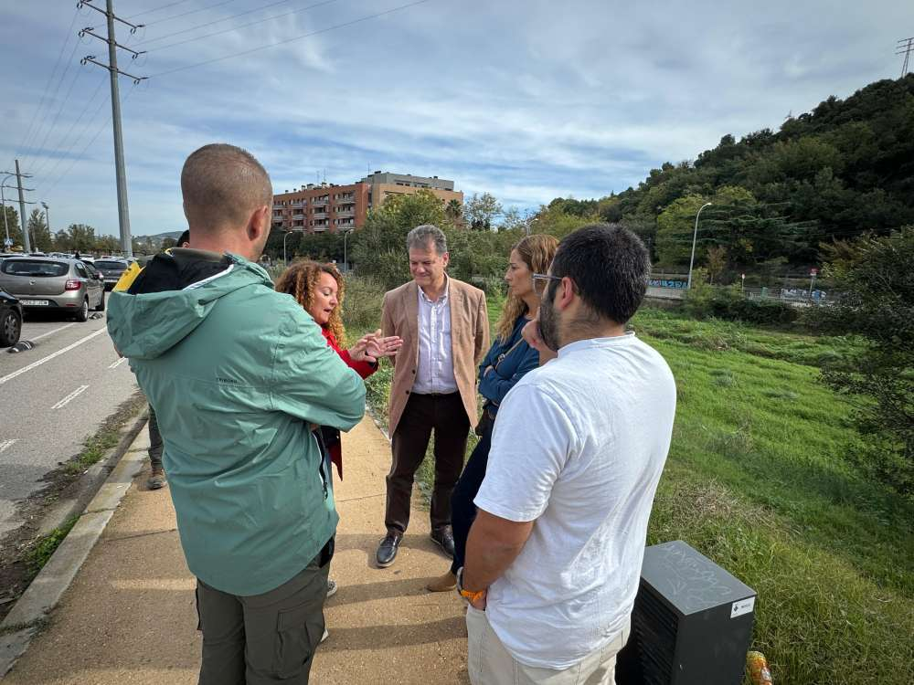

Medi Ambient
Ajuntament Montcada i Reixac
Contacte
Galeria
Mesures mediambientals
Consells per empreses i habitants
Informació UE i Agenda 2030
Citacions
Notícies
Últimes notícies relacionades amb el medi ambient:


Més notícies de medi ambient
Serveis
Deixalleria
Deixalleria mòbil
Mercat intercanvi de roba
Minideixalleries
Recollida d'oli usat
Recollida de mobles i voluminosos
Recollida de restes de poda